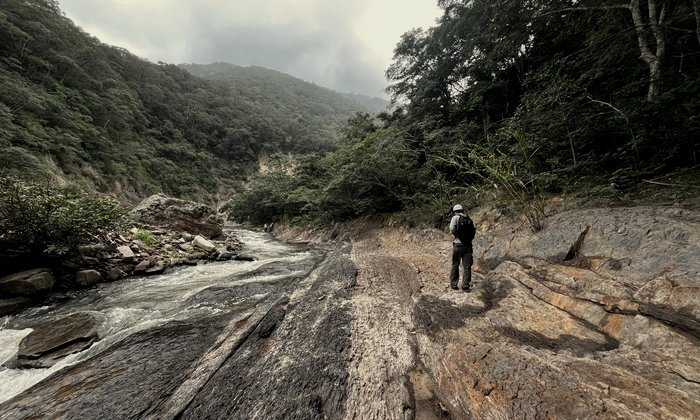
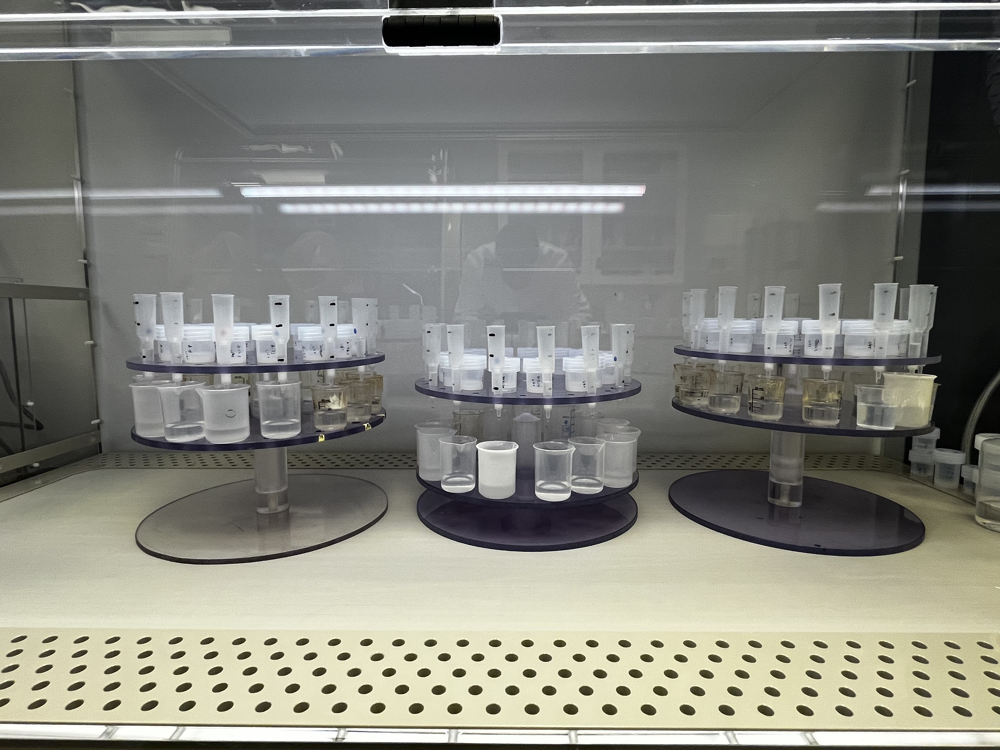
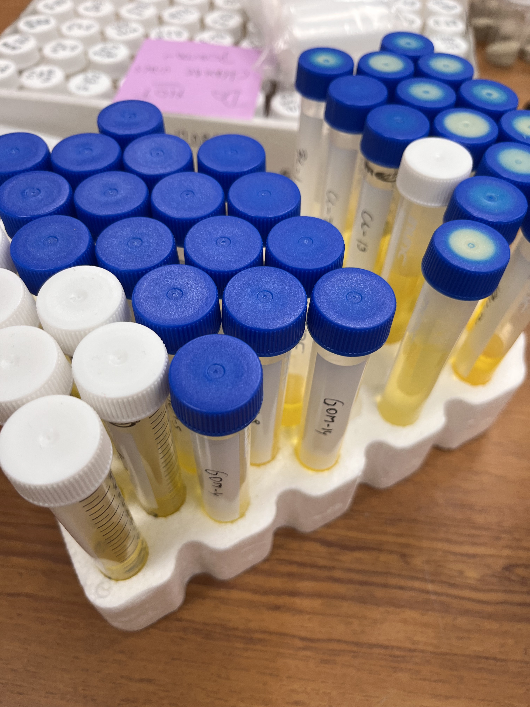
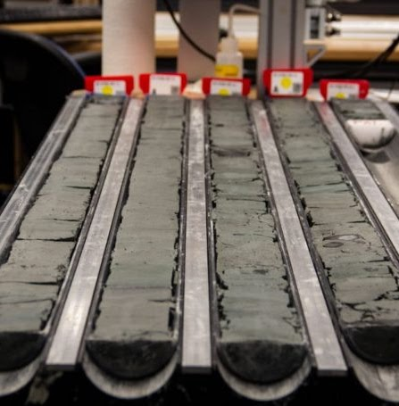

Reconstructing ancient ocean chemistry and climate to understand how Earth's systems respond to change — and bringing those skills to new problems.
Get in touchI'm a postdoctoral researcher at the University of Copenhagen, working at the intersection of geochemistry, sedimentology, and Earth history. My research reconstructs ancient ocean chemistry and paleoclimate using geochemical proxies, translating rocks and sediments into quantitative records of how Earth's carbon, oxygen, and nutrient cycles have responded to major perturbations.
My work moves between field and office, between raw data and public talks, between writing grants and writing for general audiences. I've led international field campaigns, built quantitative data workflows in Python, managed NSF-funded projects across four countries, and published both in peer-reviewed journals and popular science outlets. I'm a Fulbright alumnus and currently serve on the Board of Directors of the Geochemical Society.
These days, I'm actively looking to apply my scientific background beyond academia. I'm based in København and putting down roots here, learning Danish, exploring the city, and open to opportunities in environmental/geological/data-driven consulting, carbon capture, or science policy and funding both in the private and public sector.
→ Open to new opportunities in Copenhagen
From the Late Devonian mass extinctions to Mesozoic Oceanic Anoxic Events, this research investigates how large-scale disruptions to Earth's carbon cycle, driven by volcanism, land plant evolution, and ocean circulation changes, cascade into environmental collapse and biodiversity loss. These ancient crises serve as natural experiments for understanding how Earth systems respond to rapid perturbation, with direct relevance to present-day climate change.

Uranium isotopes are among the most powerful tools for reconstructing ancient ocean oxygen levels, but a long-standing problem has compromised the proxy: diagenetic reduction introduces isotopically heavy U(IV) into carbonate sediments, biasing the seawater signal. Working within Tais Dahl's group at KU, I contributed to the development and application of an anaerobic ion chromatographic separation technique that isolates U(VI) from U(IV) in carbonate samples, operated strictly under anoxic conditions using TEVA resin and HPLC-QQQ-ICPMS. By measuring only the hexavalent uranium fraction, we recover a cleaner record of ancient seawater composition. I am applying this methodology to reconstruct marine anoxia across key Ordovician and Silurian oceanic anoxic events, directly addressing the persistent mismatch between carbon and uranium isotope records that has hindered our understanding of these climate crises.

Reconstructing past salinity is essential for understanding ancient ocean circulation, watermass properties, and the hydrological cycle. I develop and calibrate elemental proxies, including B/Ga and related ratios, in modern and near-modern sedimentary environments, then apply them to deep-time records. This work bridges modern oceanographic observations with the geological past, providing quantitative constraints on how Earth's water cycle has evolved across major climate transitions.

The global ocean is absorbing most of the heat and CO2 from human-induced warming, but how this will affect long-term circulation remains uncertain. This project uses the warm Pliocene as a natural analogue for future climate, testing whether a Pacific Meridional Overturning Circulation existed during that interval. Working alongside climate modelers, geochemists, and astrochronologists, I reconstruct ocean ventilation, nutrient availability, and water mass mixing using redox and productivity proxies. If a Pliocene PMOC is confirmed, it would require substantial revision of our models for future ocean-climate feedbacks.
Open to opportunities in environmental consulting, data science, science communication, and science policy and funding in Copenhagen. Always happy to connect.